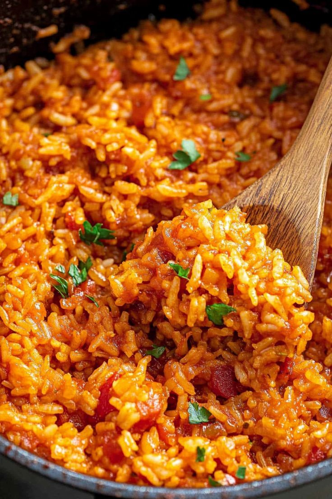

Riz Jollof (Afrique de l'Ouest) ‚Äì Riz mijot√© avec tomates, oignons et √©pices üçΩ
Ingrédients :
- 500 g de riz
- 3 tomates mûres coupées en dés
- 2 cuillères à soupe de concentré de tomate
- 2 oignons finement hachés
- 1 poivron rouge coupé en dés
- 1 gousse d’ail écrasée
- 1 cuillère à café de paprika
- 1 cuillère à café de thym
- 1 cube de bouillon
- 500 ml de bouillon ou d’eau
- Huile végétale, sel et poivre
Instructions :
- 1. Faire revenir les oignons et l’ail dans l’huile chaude.
- 2. Ajouter les tomates, le poivron et le concentré de tomate. Laisser cuire 10 min.
- 3. Incorporer le riz, le bouillon et les épices. Couvrir et cuire à feu doux.
- 4. Laisser mijoter jusqu’à absorption du liquide et cuisson complète du riz.
- 5. Servir chaud avec du poulet, du poisson ou des légumes.